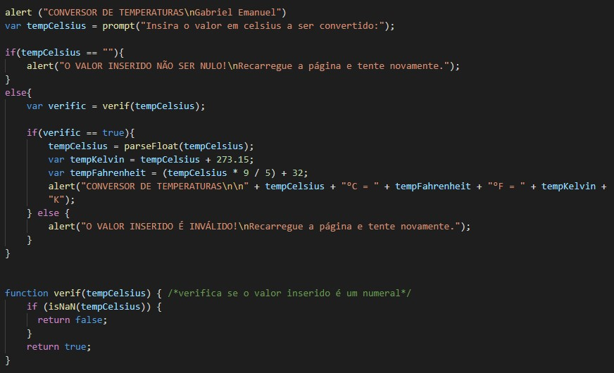
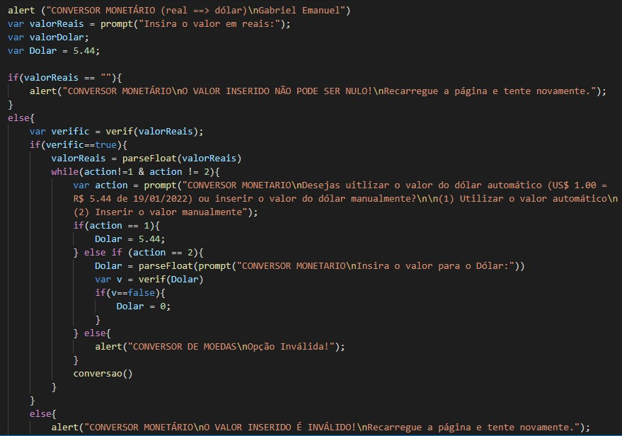
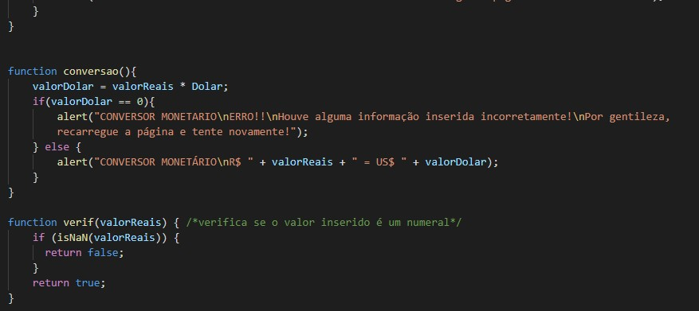
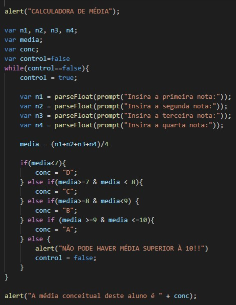
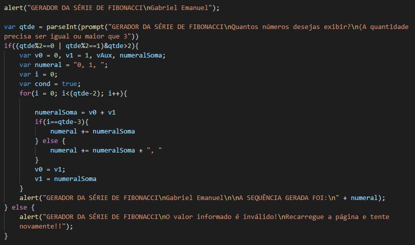
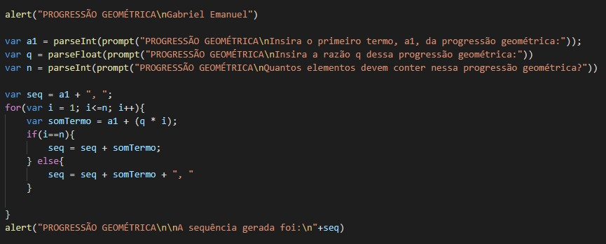
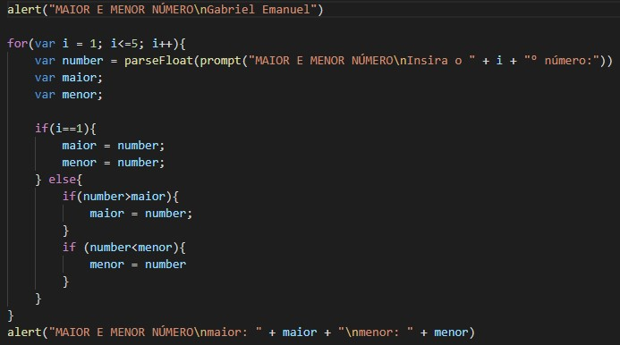
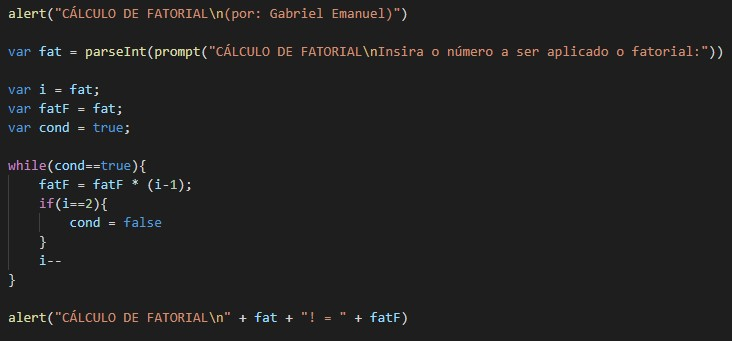
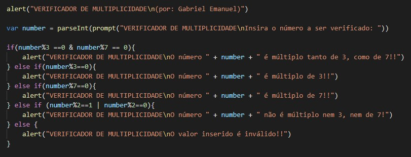

Resolução de Exercícios (RDE 14)
Exercício 01)
Crie um script em que seja possível digitar a temperatura em Celsius, e seja exibida a temperatura convertida em Fahrenheit e Kelvin
Resolução
Exercício 02)
Crie um script em que seja possível converter o valor digitado para dólar ou real de acordo com a escolha do usuário
Resolução
 Exercício 03)
Crie um script em que seja possível digitar 4 notas de um aluno calcule sua média e converta para conceitos.
9 a 10 – Conceito A
8 a 8.9 – Conceito B
7 a 7.9 – Conceito C
Nota < 7 – Conceito D
Resolução
Exercício 04)
Crie um script que gere a série de Fibonacci de acordo com o quantidade de elementos que o usuário desejar
Resolução
Exercício 05)
Crie um script que leia o primeiro termo, a razão e a quantidade de termos e gere uma progressão geométrica
Resolução
Exercício 06)
Crie um script que leia 5 números e diga qual é o maior e qual o menor.
Resolução
Exercício 07)
7. Elabore um script em que seja possível entrar com dados de idade e sexo de 5 pessoas. Exiba:
a. Quantas pessoas são do sexo masculino e quantas pessoas são do sexo feminino.
b. Quantas pessoas são maiores e menores de idade
c. Qual o homem mais velho e mais novo
d. Qual a mulher mais velha e mais nova
e. Quantos homens e quantas mulheres são maiores de idade

Exercício 08)
Crie um script que gere o fatorial de um número. Ex: 3! = 3x2x1 = 6
Resolução
Exercício 09)
Crie um script que diga se um número é múltiplo de 3 ou 7
Resolução
Exercício 10)
Crie um script com um jogo em que o usuário digite seu nome e um valor e o programa diga se acertou ou errou. Se o usuário errou deve ser dadas 3 dicas para que ele tente acertar. Ex:
Digite seu nome: Fulano
Digite um numero: 1. Fulano você errou o número está entre 2 e 10
Digite um numero: 8. Fulano você errou o número está entre 2 e 8.
Digite um numero: 5. Fulano você errou o número está entre 5 e 8.
Digite um numero: 7. Fulano você acertou.
Obs.: Caso o usuário errasse a 4ª vez deveria exibir uma mensagem dizendo que ele errou e mostrar qual é o valor correto.

Sobre o Desenvolvedor:
Aluno: Gabriel Emanuel - 3° Info Manhã
Professor e Orientador: Francis Baranoski
Vídeo Aula - Softwares de Versionamento
Instituto Federal do Paraná - Campus Irati
R. Pedro Koppe, 100 - Vila Sao Joao, Irati - PR, 84507-302
ULTIMA MODIFICAÇÃO EM
19/01/2022 às 23:27, horário oficial de Brasilia - Brasil